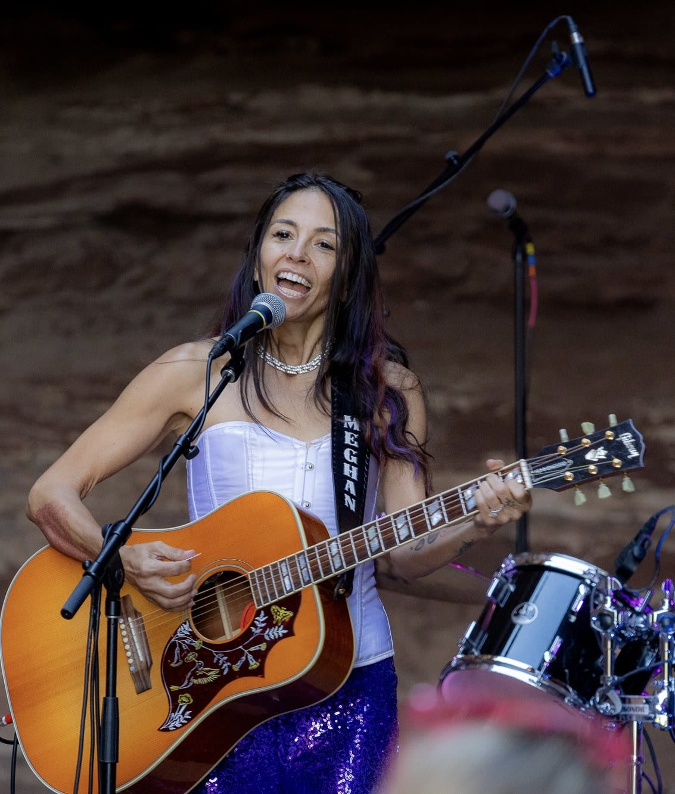
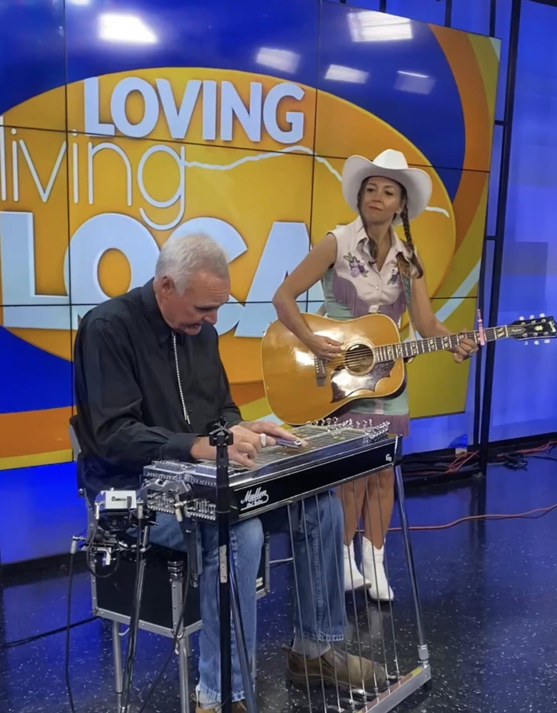
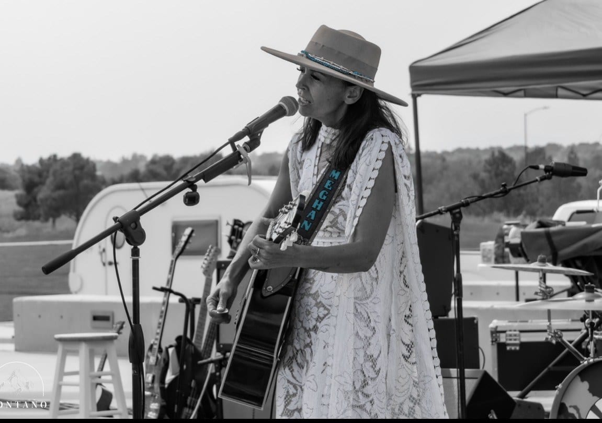
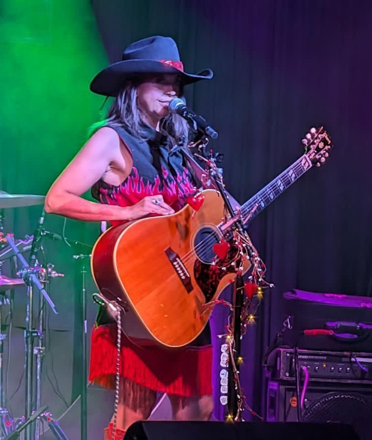
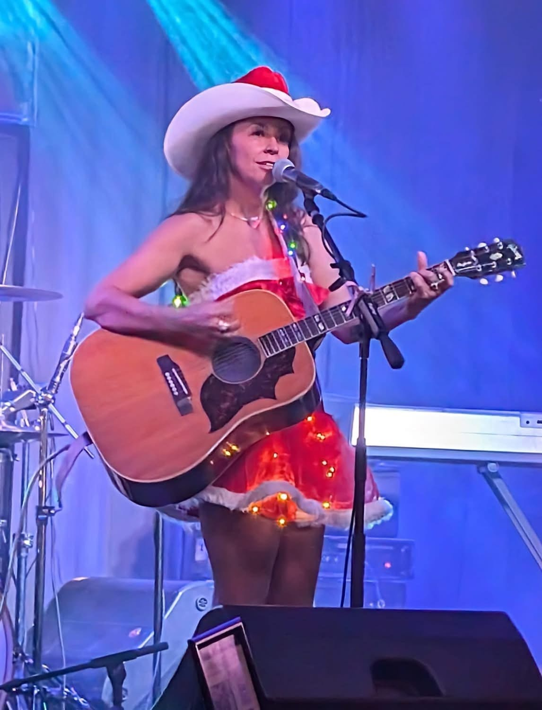

Country and Americana
Meghan Clarisse
- WinnerFolk/Americana Album of the YearJosie Music Awards, 2026
- WinnerDuo of the YearColorado Country Music Hall of Fame, 2025
- WinnerBest Musical ActHidden Gems of Lakewood
Covers and originals, solo, as a duo or with a full band.
You know what it’s like when Jolene comes on and the whole table starts singing along? Meghan Clarisse is a Denver singer-songwriter who calls what she does “music with country roots and cowgirl boots,” and she plays the country songs your guests love alongside her own. She can play on her own at a dinner, bring pedal steel or electric guitar as a duo, or bring a five-piece band to get people dancing.
Awards and press
- WinnerFolk/Americana Album of the YearJosie Music Awards, 2026
- WinnerDuo of the YearColorado Country Music Hall of Fame, 2025
- WinnerBest Musical ActHidden Gems of Lakewood
- HonoreeGolden Star AwardColorado Country Music Hall of Fame, 2026
- NomineeAlbum of the Year, Female Vocalist, Song of the Year and the Spirit of the West AwardMountain West Country Music Association, 2026
- NomineeFemale Vocalist of the YearColorado Country Music Hall of Fame, 2024
In the press and on air
- Take Effect Reviews
Press · 2026
“A diverse and authentic body of work, there's plenty of relatable themes and timeless song craft to enjoy.”

Press · The Denver Gazette · 2025

TV · Colorado & Company, 9NEWS
Played Strong and Go Back To Your Mama live with Todd Clayton
- Great Day Colorado, FOX31
TV
Played Strong live with Mark Gabert
- Loving Living Local
TV
Featured artist
- Colorado radio
Radio
Featured on K4CO, KGNU's Honky Tonk Heroes and KRZA
- CanvasRebel and Bold Journey
Press · 2024 and 2026
Stages and credits
- Headlined Lakewood's Cider Days two years running, and played Parker Days, the Adams County Fair and the Mountain West showcase at The Antlers in Colorado Springs
- Plays as a duo with Todd Clayton, who went into the Colorado Country Music Hall of Fame in 2024
- Shadows of a Ghost Town features Todd Clayton and Chelsey Webb (2025)
- Has volunteered with Musicians On Call since 2019, playing for patients at Children's Hospital Colorado and the Denver VA
Trusted and booked by
Meghan’s album Shadows of a Ghost Town won the 2026 Josie Music Award for Folk/Americana Album of the Year. The Colorado Country Music Hall of Fame gave her its Golden Star Award in 2026, and her duo won its Duo of the Year award in 2025. You may have seen her on Great Day Colorado or Colorado & Company, too.
Her usual style is a little vintage cowgirl, and that’s a lot of fun if you want a country feel. If your event is more formal, she can dress up or wear all black, too.
When she’s not performing, Meghan volunteers with Musicians On Call, playing live music for patients at Children’s Hospital and the VA in Denver.
Configurations
| Size | What it suits |
|---|---|
| SoloVoice and acoustic guitar, sometimes keys | On her own, she’s a lovely choice for welcome drinks, patios and dinners, and she fits easily into a home. |
| DuoVoice and rhythm guitar, plus pedal steel or electric lead guitar | Pedal steel is the sliding, singing guitar you hear on classic country records, and it gives a duo a much bigger country sound. |
| Five-piece bandLead and harmony vocals, rhythm guitar, lead guitar, pedal steel, bass and drums | This is her full band, and it’s the size to book when you want people dancing at a wedding reception or a big party. |
Send us your date and we’ll help you choose the size that works best. She can put a trio together, too, if that’s a better fit.
Occasions
Perfect booking for
- Country and ranch weddings
- Book her solo or as a duo for your ceremony or cocktail hour, and bring in the five-piece band for the reception.
- Birthdays and private parties
- She’s a lot of fun at a birthday or an anniversary when your guests love country music, and a solo or a duo is an easy fit at home.
- Office holiday parties
- Dolly Parton and Fleetwood Mac both go over well with a mixed crowd. Book the five-piece band if you want a dance floor, or the duo if your party is more of a dinner.
- Retreats and welcome receptions
- If your team is flying in from out of state, a Colorado songwriter with a pedal steel player beside her is a fun way to welcome them to the West.
Planning toasts or a program? We can work the music around them with your run of show. You can also get a general idea of what live music costs in Colorado from our cost guide.
Song list
A sample of her songs.
This is a sample of the covers on her song list, and we’ll put the setlist together with you.


- JoleneDolly Parton
- Folsom Prison BluesJohnny Cash
- Mama TriedMerle Haggard
- JambalayaHank Williams
- Neon MoonBrooks & Dunn
- Strawberry WineDeana Carter
- Wagon WheelOld Crow Medicine Show
- Cover Me UpJason Isbell
- KeroseneMiranda Lambert
- Before He CheatsCarrie Underwood
- My ChurchMaren Morris
- Angel From MontgomeryJohn Prine
- DreamsFleetwood Mac
- LandslideFleetwood Mac
- All I Wanna DoSheryl Crow
- Summer of ’69Bryan Adams
- What’s Up4 Non Blondes
- Pink Pony ClubChappell Roan
Video Clips
Watch Meghan Clarisse play country and Americana










What clients say
“I perchance saw Meaghan and her Cavemen, They were all amazing musicians. They opened up with the “House of The Rising Sun” I had to stay and listen until the end of the night.. great show, flawless performance.”
Venues
We’d pick Meghan Clarisse for live music at these venues.

Colorado Springs, above Garden of the Gods
Garden of the Gods Resort and Club
The Three Graces Ballroom and Terrace, the View at Kissing Camels, the Garden Room, the Hill Room and the Reflection Pool.
Acts we'd pickClassical Strings · Tejas Singh · Meghan Clarisse
Live music at Garden of the Gods Resort
Aurora, by Denver International Airport
Gaylord Rockies Resort & Convention Center
Four ballrooms, the Mountain View Pavilion and its lawns, the Grand Lodge and the Front Range Lawn.
Acts we'd pickTejas Singh · Little Moses Jones · Quadrasonic
Live music at Gaylord Rockies
Colorado Springs, at the foot of Cheyenne Mountain
The Broadmoor
The Main Ballroom, the Lake Terrace and Lakeside Terrace, Broadmoor Hall, the International Center and Cheyenne Lodge.
Acts we'd pickClassical Strings · Jazz Duo · Dirty Flamenco
Live music at the Broadmoor
Meghan Clarisse questions
Still have a question? Our full question list may have the answer.
Does she play covers or her own songs?
Can she keep the volume down during dinner?
Does she play outdoor events?
Does she play outside Denver?

Looking for a country singer or band in Denver?
Send us your date and we’ll let you know if Meghan is available and what it would cost.
Want photos or video of your event? Add them to your booking.